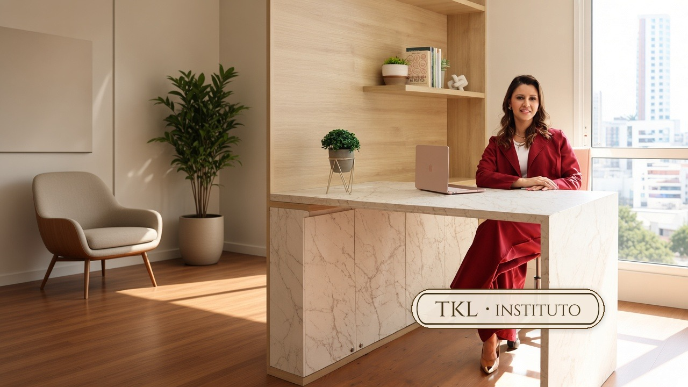
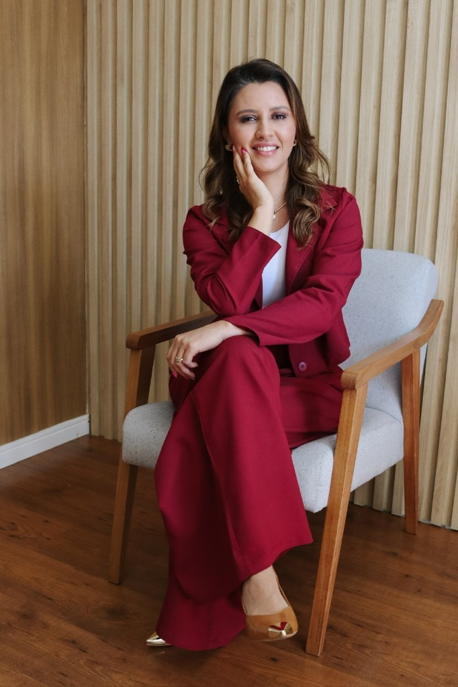

Compreender a história emocional
Reconhecer experiências, dores e crenças que influenciam sua forma de sentir, escolher e se relacionar.

O Instituto
Reconstrua sua identidade emocional e desenvolva uma nova forma de viver.
O TKL Instituto oferece um acompanhamento para quem deseja compreender suas raízes emocionais, romper padrões repetitivos e construir uma relação mais saudável consigo e com a própria história.
Nem toda dor aparece apenas como tristeza ou ansiedade. Às vezes, ela se manifesta nas escolhas, nos relacionamentos, na dificuldade de estabelecer limites e na forma como você enxerga a si mesmo.
O acompanhamento pode fazer sentido se você:
Você não precisa continuar vivendo a partir das feridas que marcaram sua história.
O TKL Instituto foi criado por Thaís Karina Lourenço a partir da percepção de que muitas pessoas não sofrem apenas pelo que viveram, mas também pela identidade que construíram a partir dessas experiências.
Foi dessa compreensão que nasceu o Método TKL: uma metodologia voltada a compreender raízes emocionais, trabalhar crenças, romper padrões repetitivos e fortalecer uma identidade mais saudável.
Atualmente, os acompanhamentos são conduzidos pela própria Thaís, de forma online ou presencial, mediante agendamento.
Pilares do TKL
Reconhecer experiências, dores e crenças que influenciam sua forma de sentir, escolher e se relacionar.
Trabalhar crenças e padrões construídos a partir das experiências vividas.
Construir escolhas, comportamentos e relações mais coerentes com seus valores.
O TKL parte da compreensão de que experiências emocionais podem influenciar não apenas sentimentos, mas também a forma como uma pessoa se percebe e conduz sua vida.
Quando a identidade muda, escolhas, relações e formas de viver também podem mudar.

Quem está por trás do TKL
Thaís Karina Lourenço
Eu sou Thaís Karina Lourenço, fundadora do TKL Instituto e criadora do Método TKL.
Minha trajetória profissional foi construída a partir do cuidado emocional e da observação de pessoas que, mesmo reconhecendo suas dores, ainda encontravam dificuldade para romper padrões.
Ao longo da minha prática, compreendi que não bastava olhar apenas para os sintomas. Era preciso compreender também as crenças, os padrões e a identidade construída a partir das experiências vividas.
Foi dessa compreensão que nasceu o Método TKL.
Meu propósito é ajudar pessoas a compreenderem sua história sem permanecerem aprisionadas a ela.
Formação e autoridade
Esta seção será preenchida com o que puder ser comprovado, sem antecipar dados que ainda não foram validados.
Método TKL
Uma metodologia própria para a reconstrução da identidade emocional.
O Método TKL organiza o acompanhamento em uma jornada clara, progressiva e personalizada, ajudando a compreender as raízes do sofrimento e os padrões que continuam se repetindo.
O processo pode trabalhar:
Como funciona
Mapeamento da história emocional, das crenças e dos padrões que se repetem.
Entender por que determinados pensamentos, emoções e comportamentos continuam acontecendo.
Trabalhar crenças, emoções, identidade e novos padrões.
Levar essa nova percepção para escolhas, relações e comportamentos mais coerentes com quem você deseja ser.
Atendimentos
Cada processo considera sua história, suas necessidades e o momento que você está vivendo.
Atendimento de onde você estiver.
Mediante agendamento e definição prévia do local.
Os dias e horários são definidos conforme disponibilidade da agenda.
Serviços
Para quem deseja compreender suas emoções, trabalhar questões relacionadas à identidade e desenvolver formas mais saudáveis de lidar com a própria história. Online ou presencial, mediante agendamento.
Quero conhecer o atendimentoPalestras para empresas, instituições, eventos e grupos sobre saúde emocional e desenvolvimento humano. Temas: reconstrução da identidade, inteligência emocional, autonomia emocional, limites saudáveis, autoestima, relacionamentos, saúde emocional, propósito e valores.
Solicitar uma propostaO TKL também desenvolve palestras, encontros e projetos personalizados para organizações interessadas em saúde emocional e desenvolvimento humano.
Falar sobre uma parceriaDiferenciais
Uma metodologia estruturada para compreender padrões e trabalhar a reconstrução da identidade.
Uma jornada que parte da compreensão e avança para a construção de novas formas de viver.
Cada processo considera a história, o momento e as necessidades de cada pessoa.
Os acompanhamentos são realizados pela própria Thaís, criadora do Método TKL.
Suas escolhas, seus relacionamentos, seus limites e a maneira como você conduz a própria história.
O objetivo não é apagar o que aconteceu.
É fazer com que o passado deixe de ocupar o lugar de quem decide o seu futuro.
Compromisso do TKL
O TKL oferece um processo sério, responsável e individualizado, que respeita a história, as necessidades e o tempo de cada pessoa.
Não se trata de construir uma vida perfeita, mas de desenvolver mais consciência sobre quem você é e sobre a forma como deseja conduzir sua vida.
O primeiro passo pode começar com uma conversa para compreender o momento que você está vivendo e conhecer o acompanhamento mais adequado para sua necessidade.
Dúvidas
Atualmente, todos os acompanhamentos são conduzidos por Thaís Karina Lourenço, fundadora do TKL Instituto e criadora do Método TKL.
As duas modalidades estão disponíveis: online ou presencial, mediante agendamento.
O local é definido diretamente com a Thaís no momento do agendamento.
Os dias e horários são definidos de acordo com a disponibilidade da agenda.
O primeiro contato permite compreender sua necessidade e apresentar a possibilidade de acompanhamento mais adequada ao seu momento.
O primeiro contato e o agendamento são realizados pelo WhatsApp.
Cada pessoa possui uma história, necessidades e um ritmo. A duração do acompanhamento depende desses fatores e da modalidade escolhida.